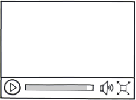

INTRODUCTION:
FIVE THINGS YOU SHOULD KNOW
ABOUT HTML5
❦
1. It`s not one big thing

You may well ask:"How can I start using HTML5 if older browsers don`t support it" But the question itself is misleading. HTML5 is not one big thing; it is a collection of individual features. So you can`t detect "HTML5 support," because that doesn`t make any sense. But you can detect support for individual features, like canvas, video, or geolocation.
You may think of HTML as tags and angle brackets. That`s an important part of it, but it`s not the whole story. The HTML5 specification also defines how those angle brackets interact with JavaScript, through the Document Object Model (DOM). HTML5 doesn`t just define a video tag; there is also a corresponding DOM API for video objects in the DOM. You can use this API to detect support for different video formats, play a video, pause, mute audio, track how much of the video has been downloaded, and everything else you need to build a rich user experience around the ‹video› tag itself.
Chapter 2 and Appendix A will teach you how to properly detect support for each new HTML5 feature.
2.You don`t need to throw anything away

Love it or hate it, you can`t deny that HTML 4 is the most successful markup format ever. HTML5 builds on that success. You don`t need to throw away your existing markup. You don`t need to relearn things you already know. If your web application worked yesterday in HTML 4, it will still work today in HTML5. Period
Now, if you want to improve your web applications, you`ve come to the right place. Here’s a concrete example: HTML5 supports all the form controls from HTML 4, but it also includes new input controls. Some of these are long-overdue additions like sliders and date pickers; others are more subtle. For example, the email input type looks just like a text box, but mobile browsers will customize their onscreen keyboard to make it easier to type email addresses. Older browsers that don’t support the email input type will treat it as a regular text field, and the form still works with no markup changes or scripting hacks. This means you can start improving your web forms today, even if some of your visitors are stuck on IE 6.
Read all the gory details about HTML5 forms in Chapter 9.
3. It`s easy to get started

"Upgrading" to HTML5 can be as simple as changing your doctype. The doctype should already be on the first line of every HTML page. Previous versions of HTML defined a lot of doctypes, and choosing the right one could be tricky. In HTML5, there is only one doctype:
‹!DOCTYPE html›
Upgrading to the HTML5 doctype won`t break your existing markup, because all the elements and attributes defined in HTML 4 still work in HTML5 (although a few are now obsolete). But it will allow you to use - and validate - new semantic elements like ‹article›, ‹section›, ‹header›, and ‹footer›. You`ll learn all about these new elements in Chapter 3.
4. It alresdy works

Whether you want to draw on a canvas, play video, design better forms, or build web applications that work offline, yo`ll find that HTML5 is already well-supported. Firefox, Safari, Chrome, Opera, and mobile browsers already support canvas (Chapter 4), video (Chapter 5), geolocation (Chapter 6), local storage (Chapter 7), and more. Google already supports microdata annotations (Chapter 10). Even Microsoft — rarely known for blazing the trail of standards support — supports most HTML5 features in Internet Explorer 9.

Each chapter of this book includes the all-too-familiar browser compatibility charts. But more importantly, each chapter includes a frank discussion of your options if you need to support older browsers. HTML5 features like geolocation (Chapter 6) and video (Chapter 5) were first provided by browser plugins like Gears or Flash. Other features, like canvas (Chapter 4), can be emulated entirely in JavaScript. This book will teach you how to target the native features of modern browsers, without leaving older browsers behind.
5. It`s here to stay
Tim Berners-Lee invented the world wide web in the early 1990s. He later founded the W3C to act as a steward of web standards, which the organization has done for more than 15 years. Here is what the W3C had to say about the future of web standards, in July 2009:
Today the Director announces that when the XHTML 2 Working Group charter expires as scheduled at the end of 2009, the charter will not be renewed. By doing so, and by increasing resources in the HTML Working Group, W3C hopes to accelerate the progress of HTML5 and clarify W3C’s position regarding the future of HTML.
HTML5 is here to stay. Let`s dive in.
❦
| DID YOU KNOW? |
In association with Google Press, O`Reilly is distributing this book in a variety of formats, including paper, ePub, Mobi, and DRM-free PDF. The paid edition is called "HTML5: Up & Running,"" and it is available now. 
If you liked this introduction and want to show your appreciation, you can buy "HTML5: Up & Running" with this affiliate link or buy an electronic edition directly from O`Reilly. You`ll get a book, and I`ll get a buck. I do not currently accept direct donations. |
Copyright MMIX-MMXI Mark Pilgrim